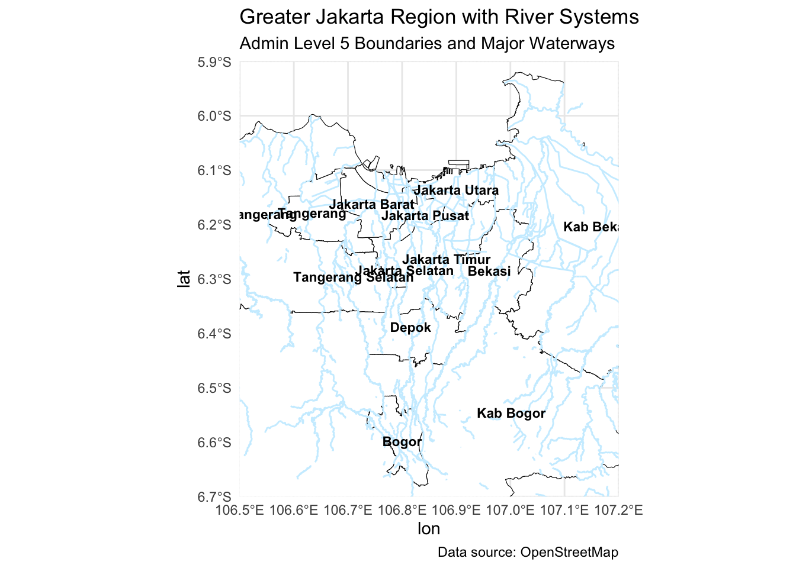
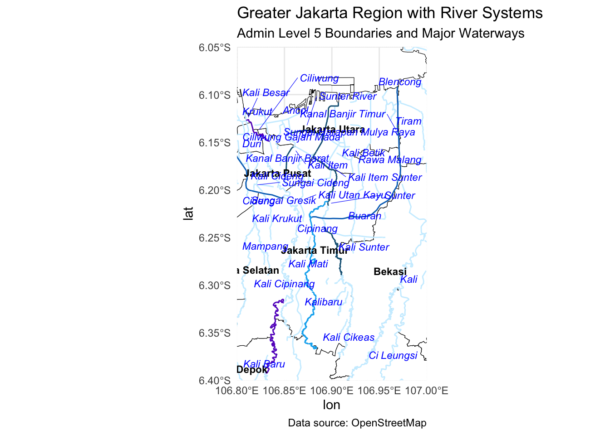
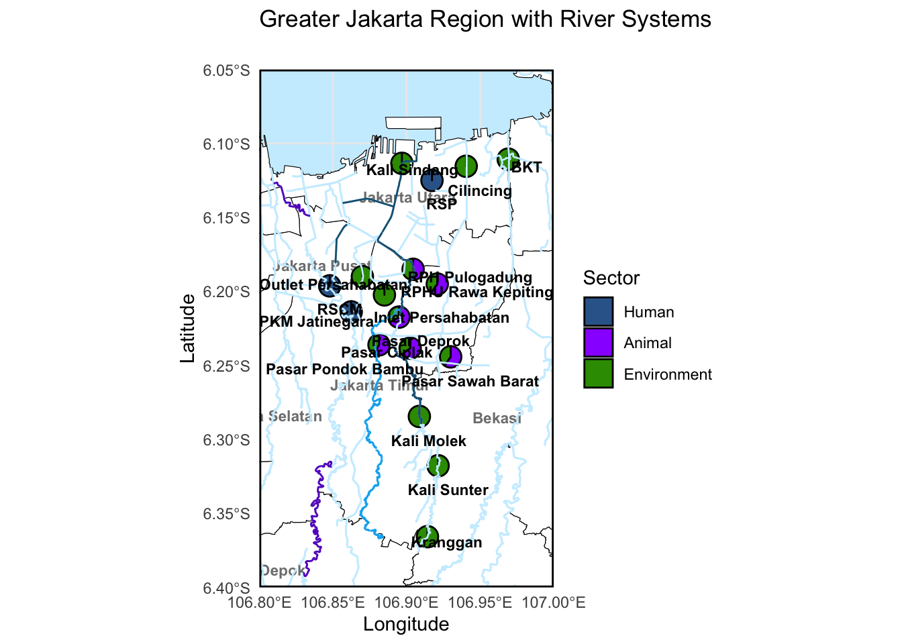
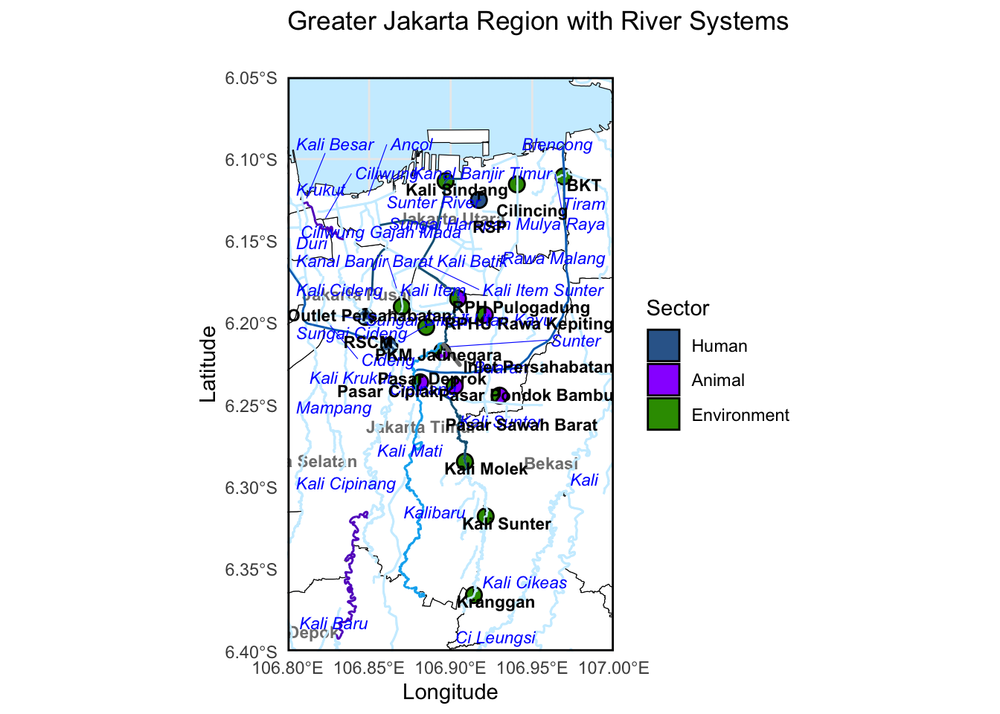

library(sf)
library(ggplot2)
library(osmdata)
library(readxl)
library(dplyr)
library(rnaturalearth)
library(rnaturalearthdata)
library(viridis)
library(tidyr) # For pivoting
library(ggforce) # For pie charts
library(ggrepel)
library(stringr)
library(scatterpie)Geospatial mapping of waterways in Jakarta, Indonesia
1. Setting up R
2. Loading data
# 1. Read data
metadata = read.csv("../data/metadata_all_edit2.csv")
locations = read_excel("../data/GPS Data of Environment sampling site_TC.xlsx")3. Wrangle data
# Remove number before locations
locations = locations %>%
mutate(site = sub("^[0-9]+\\.", "", Location))
locations[locations$Location == "Pasar Sawah Barat", "Longitude"] = 106.93
# create a new column with mutations
metadata = metadata %>%
dplyr::mutate(site = sub("^[0-9]+\\.", "", site))
# Merge metadata and coordinates
metadata_mlst = metadata %>%
dplyr::left_join(locations, by = c("site" = "site"))
# Choose
metadata_mlst_2 = metadata_mlst %>%
dplyr::filter(sector == "Human" | sector == "Environment" | sector == "Animal")4. Making the Jakarta Map
# boundaries
gj_bbox = c(xmin = 106.5, ymin = -6.7, xmax = 107.2, ymax = -5.9)
# Query for city/regency boundaries (admin level 5)
greater_jakarta_admin = opq(bbox = gj_bbox) %>%
add_osm_feature(key = "admin_level", value = "5") %>%
osmdata_sf()
greater_jakarta_map = greater_jakarta_admin$osm_multipolygons
#plot(st_geometry(greater_jakarta_map))
unique(greater_jakarta_map$name) [1] "Jakarta Selatan" "Jakarta Timur" "Kepulauan Seribu"
[4] "Jakarta Pusat" "Jakarta Barat" "Jakarta Utara"
[7] "Tangerang Selatan" "Tangerang" "Kabupaten Tangerang"
[10] "Bekasi" "Depok" "Bogor"
[13] "Kab Bogor" "Kab Bekasi" "Cianjur"
[16] "Karawang" unique(greater_jakarta_map$admin_level)[1] "5"unique(greater_jakarta_map$type)[1] "boundary"gj_filtered = greater_jakarta_map %>%
filter(grepl("Jakarta|Bogor|Bekasi|Depok|Tangerang", name))
labels_df = gj_filtered %>%
st_point_on_surface() %>% # safer than centroid for oddly shaped areas
select(name) %>%
mutate(lon = st_coordinates(.)[,1],
lat = st_coordinates(.)[,2])Warning: st_point_on_surface assumes attributes are constant over geometriesWarning in st_point_on_surface.sfc(st_geometry(x)): st_point_on_surface may not
give correct results for longitude/latitude data5. Making the Jakarta Map with rivers
coords = read.csv("../data/metadata_combined_with_mlst_human_animal_env.csv")
# Step 1: Query OSM for river systems within the Jakarta bounding box
gj_waterways = opq(bbox = gj_bbox) %>%
add_osm_feature(key = "waterway") %>%
osmdata_sf()
# Step 2: Extract the 'lines' layer (rivers, canals, streams are linear features)
gj_rivers = gj_waterways$osm_lines
# Optional: Filter for specific types of waterways (optional but can help declutter)
gj_rivers = gj_rivers %>%
filter(waterway %in% c("river", "canal", "stream"))
gj_rivers = gj_rivers %>%
filter(waterway %in% c("river"))
river_labels = gj_rivers %>%
filter(!is.na(name)) %>% # Keep only named rivers
group_by(name) %>%
dplyr::slice(1) %>% # Only one label per river
ungroup() %>%
st_point_on_surface() %>%
mutate(lon = st_coordinates(.)[, 1],
lat = st_coordinates(.)[, 2])Warning: st_point_on_surface assumes attributes are constant over geometriesWarning in st_point_on_surface.sfc(st_geometry(x)): st_point_on_surface may not
give correct results for longitude/latitude datasunter_river = gj_rivers %>%
filter(name %in% c("Sunter River", "Sunter", "Kali Sunter"))
ciliwung_river = gj_rivers %>%
filter(name %in% c("Ciliwung River", "Ciliwung", "Kali Ciliwung"))
cipinang_river = gj_rivers %>%
filter(name %in% c("Cipinang River", "Cipinang", "Kali Cipinang"))
BKT = gj_rivers %>%
filter(name %in% c("BKT", "Banjir Kanal Timur", "Kanal Banjir Barat", "Kanal Banjir Timur"))
cakung_drain = gj_rivers %>%
filter(name %in% c("Cakung"))
# Step 3: Plot with rivers overlaid
ggplot() +
geom_sf(data = gj_filtered, fill = "white", color = "black") + # city/regency areas
geom_sf(data = gj_rivers, color = "#cceeff", size = 1) + # rivers
geom_text(data = labels_df, aes(x = lon, y = lat, label = name), size = 3, fontface = "bold") +
coord_sf(xlim = c(106.5, 107.2), ylim = c(-6.7, -5.9), expand = FALSE) +
labs(title = "Greater Jakarta Region with River Systems",
subtitle = "Admin Level 5 Boundaries and Major Waterways",
caption = "Data source: OpenStreetMap") +
theme_minimal()
ggplot() +
geom_sf(data = gj_filtered, fill = "white", color = "black") + # city/regency areas
geom_sf(data = gj_rivers, color = "#cceeff", size = 5) +
geom_sf(data = sunter_river, color = "#176082", size = 5) +
geom_sf(data = ciliwung_river, color = "#6713C6", size = 5) +
geom_sf(data = cipinang_river, color = "#00B0F0", size = 5) +
geom_sf(data = BKT, color = "#0070C0", size = 5) + # rivers
geom_text(data = labels_df, aes(x = lon, y = lat, label = name), size = 3, fontface = "bold") +
geom_text_repel(
data = river_labels,
aes(x = lon, y = lat, label = name),
size = 3, fontface = "italic", color = "blue",
segment.color = "blue", segment.size = 0.2,
box.padding = 0.3, point.padding = 0.3, max.overlaps = Inf
) +
coord_sf(xlim = c(106.8, 107.0), ylim = c(-6.4, -6.05), expand = FALSE) +
labs(title = "Greater Jakarta Region with River Systems",
subtitle = "Admin Level 5 Boundaries and Major Waterways",
caption = "Data source: OpenStreetMap") +
theme_minimal()
# Step 3: Plot with rivers overlaid and sample sites
pie_df= coords %>%
dplyr::count(Longitude, Latitude, sector) %>% # Count samples per sector per location
pivot_wider(
names_from = sector,
values_from = n,
values_fill = 0 ) # Fill missing sector values with 0
pie_labels = coords %>%
distinct(site, Longitude, Latitude) %>%
mutate(
label_lon = Longitude + 0.01, # Offset east
label_lat = Latitude - 0.01 # Offset north
)
sector_key = unique(coords[, c("sector", "sector_colour")])
p_rivers = ggplot() +
geom_sf(data = gj_filtered, fill = "white", color = "black") + # city/regency areas
geom_sf(data = gj_rivers, color = "#cceeff", size = 5) + # rivers
geom_text(data = labels_df,
aes(x = lon, y = lat, label = name),
size = 3, fontface = "bold", color = "gray50") +
geom_scatterpie(
data = pie_df,
aes(x = Longitude, y = Latitude),
cols = sector_key$sector, # a character vector of your sector names
pie_scale = 3) + # adjust this so pies aren’t too big/small
geom_sf(data = gj_rivers, color = "#cceeff", size = 5) +
geom_sf(data = sunter_river, color = "#176082", size = 5) +
geom_sf(data = ciliwung_river, color = "#6713C6", size = 5) +
geom_sf(data = cipinang_river, color = "#00B0F0", size = 5) +
scale_fill_manual(
name = "Sector",
values = setNames(sector_key$sector_colour,
sector_key$sector)) +
geom_text_repel(data = pie_labels,
aes(x = label_lon, y = label_lat, label = site),
size = 3, fontface = "bold", color = "black",
box.padding = 0, point.padding = 0, max.overlaps = Inf,
segment.color = "gray50", segment.size = 1, force = 4) +
coord_sf(
xlim = c(106.8, 107.0),
ylim = c(-6.4, -6.05), expand = FALSE) +
theme_minimal() +
theme(
panel.background = element_rect(fill = "#cceeff", color = NA)) +
theme(legend.position = "right",
panel.border = element_rect(colour = "black", fill=NA, linewidth=1)) +
labs(title = "Greater Jakarta Region with River Systems",
subtitle = " ",
x = "Longitude", y = "Latitude")
# 5. Print the map
print(p_rivers)
ggsave("../imgs/Greater Jakarta Region with River Systems and sample sites.svg", p_rivers, height = 8, width = 8)
ggsave("../imgs/Greater Jakarta Region with River Systems and sample sites.png", p_rivers, height = 8, width = 8)
p_rivers_highlights = ggplot() +
geom_sf(data = gj_filtered, fill = "white", color = "black") + # city/regency areas
geom_sf(data = gj_rivers, color = "#cceeff", size = 5) + # rivers
geom_text(data = labels_df,
aes(x = lon, y = lat, label = name),
size = 3, fontface = "bold", color = "gray50") +
geom_scatterpie(
data = pie_df,
aes(x = Longitude, y = Latitude),
cols = sector_key$sector, # a character vector of your sector names
pie_scale = 2) + # adjust this so pies aren’t too big/small
geom_sf(data = gj_rivers, color = "#cceeff", size = 5) +
geom_sf(data = sunter_river, color = "#176082", size = 5) +
geom_sf(data = ciliwung_river, color = "#6713C6", size = 5) +
geom_sf(data = cipinang_river, color = "#00B0F0", size = 5) +
geom_sf(data = BKT, color = "#0070C0", size = 5) +
scale_fill_manual(
name = "Sector",
values = setNames(sector_key$sector_colour,
sector_key$sector)) +
geom_text_repel(
data = river_labels,
aes(x = lon, y = lat, label = name),
size = 3, fontface = "italic", color = "blue",
segment.color = "blue", segment.size = 0.2,
box.padding = 0.3, point.padding = 0.3, max.overlaps = Inf
) +
geom_text_repel(data = pie_labels,
aes(x = label_lon, y = label_lat, label = site),
size = 3, fontface = "bold", color = "black",
box.padding = 0, point.padding = 0, max.overlaps = Inf,
segment.color = "gray50", segment.size = 1, force = 4) +
coord_sf(
xlim = c(106.8, 107.0),
ylim = c(-6.4, -6.05), expand = FALSE) +
theme_minimal() +
theme(
panel.background = element_rect(fill = "#cceeff", color = NA)) +
theme(legend.position = "right",
panel.border = element_rect(colour = "black", fill=NA, linewidth=1)) +
labs(title = "Greater Jakarta Region with River Systems",
subtitle = " ",
x = "Longitude", y = "Latitude")
print(p_rivers_highlights)
ggsave("../imgs/Greater Jakarta Region with River Systems and sample sites main rivers highlighted.svg", p_rivers_highlights, height = 8, width = 8)
ggsave("../imgs/Greater Jakarta Region with River Systems and sample sites main rivers highlighted.png", p_rivers_highlights, height = 8, width = 8)